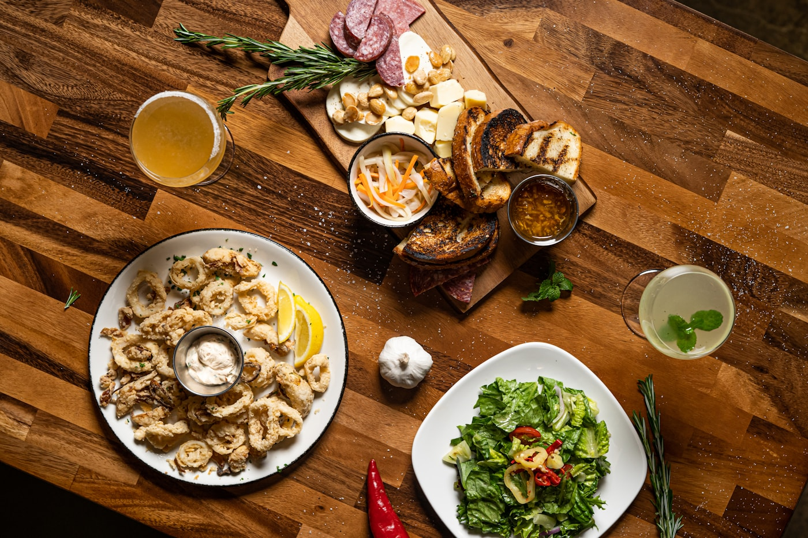
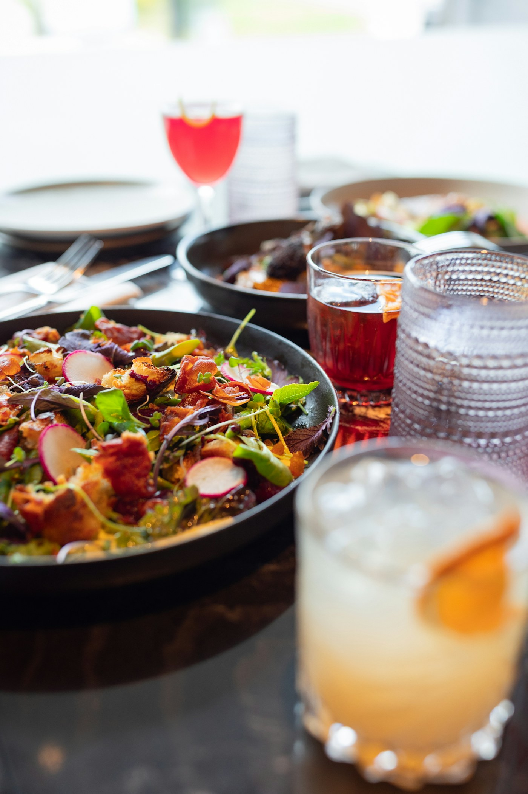

Proaspăt pregătit. Ușor de ales.Un prânz bun, în ritmul zilei tale.


Legume coapte, hummus, orez, verdețuri
Selecție de gustări și legume de sezon
Frunze crocante, roșii, brânză, dressing
Preparatul zilei și garnitură de sezon